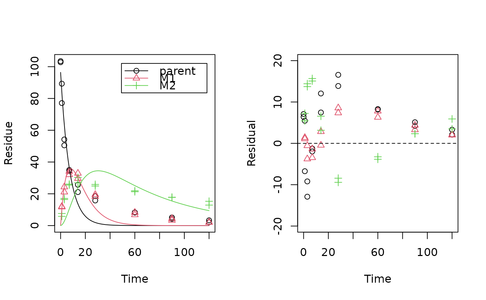
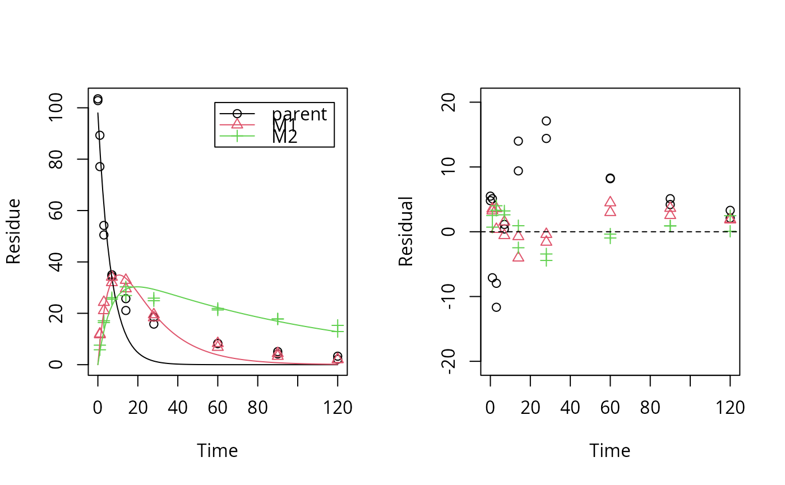
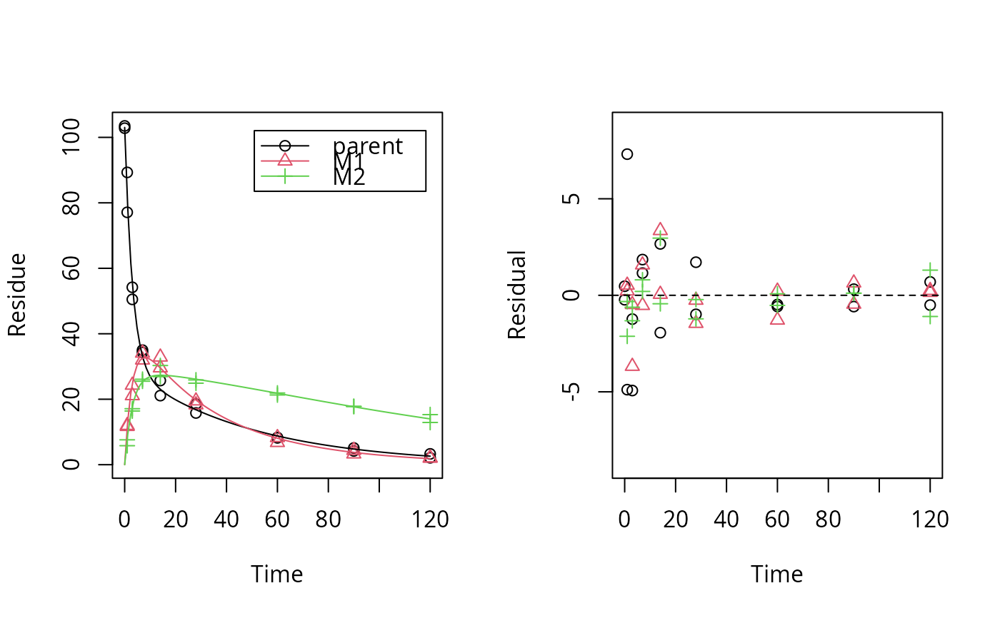

This is a generic function with a method currently only defined for mkinfit
objects. It fits an anova model to the data contained in the object and
compares the likelihoods using the likelihood ratio test
lrtest.default from the lmtest package.
loftest(object, ...) # S3 method for mkinfit loftest(object, ...)
| object | A model object with a defined loftest method |
|---|---|
| ... | Not used |
The anova model is interpreted as the simplest form of an mkinfit model, assuming only a constant variance about the means, but not enforcing any structure of the means, so we have one model parameter for every mean of replicate samples.
lrtest
# \dontrun{ test_data <- subset(synthetic_data_for_UBA_2014[[12]]$data, name == "parent") sfo_fit <- mkinfit("SFO", test_data, quiet = TRUE) plot_res(sfo_fit) # We see a clear pattern in the residualsloftest(sfo_fit) # We have a clear lack of fit#> Likelihood ratio test #> #> Model 1: ANOVA with error model const #> Model 2: SFO with error model const #> #Df LogLik Df Chisq Pr(>Chisq) #> 1 10 -40.710 #> 2 3 -63.954 -7 46.487 7.027e-08 *** #> --- #> Signif. codes: 0 ‘***’ 0.001 ‘**’ 0.01 ‘*’ 0.05 ‘.’ 0.1 ‘ ’ 1# # We try a different model (the one that was used to generate the data) dfop_fit <- mkinfit("DFOP", test_data, quiet = TRUE) plot_res(dfop_fit) # We don't see systematic deviations, but heteroscedastic residuals# therefore we should consider adapting the error model, although we have loftest(dfop_fit) # no lack of fit#> Likelihood ratio test #> #> Model 1: ANOVA with error model const #> Model 2: DFOP with error model const #> #Df LogLik Df Chisq Pr(>Chisq) #> 1 10 -40.710 #> 2 5 -42.453 -5 3.485 0.6257# # This is the anova model used internally for the comparison test_data_anova <- test_data test_data_anova$time <- as.factor(test_data_anova$time) anova_fit <- lm(value ~ time, data = test_data_anova) summary(anova_fit)#> #> Call: #> lm(formula = value ~ time, data = test_data_anova) #> #> Residuals: #> Min 1Q Median 3Q Max #> -6.1000 -0.5625 0.0000 0.5625 6.1000 #> #> Coefficients: #> Estimate Std. Error t value Pr(>|t|) #> (Intercept) 103.150 2.323 44.409 7.44e-12 *** #> time1 -19.950 3.285 -6.073 0.000185 *** #> time3 -50.800 3.285 -15.465 8.65e-08 *** #> time7 -68.500 3.285 -20.854 6.28e-09 *** #> time14 -79.750 3.285 -24.278 1.63e-09 *** #> time28 -86.000 3.285 -26.181 8.35e-10 *** #> time60 -94.900 3.285 -28.891 3.48e-10 *** #> time90 -98.500 3.285 -29.986 2.49e-10 *** #> time120 -100.450 3.285 -30.580 2.09e-10 *** #> --- #> Signif. codes: 0 ‘***’ 0.001 ‘**’ 0.01 ‘*’ 0.05 ‘.’ 0.1 ‘ ’ 1 #> #> Residual standard error: 3.285 on 9 degrees of freedom #> Multiple R-squared: 0.9953, Adjusted R-squared: 0.9912 #> F-statistic: 240.5 on 8 and 9 DF, p-value: 1.417e-09 #>#> 'log Lik.' -40.71015 (df=10)# test_data_2 <- synthetic_data_for_UBA_2014[[12]]$data m_synth_SFO_lin <- mkinmod(parent = list(type = "SFO", to = "M1"), M1 = list(type = "SFO", to = "M2"), M2 = list(type = "SFO"), use_of_ff = "max")#>sfo_lin_fit <- mkinfit(m_synth_SFO_lin, test_data_2, quiet = TRUE) plot_res(sfo_lin_fit) # not a good model, we try parallel formationloftest(sfo_lin_fit)#> Likelihood ratio test #> #> Model 1: ANOVA with error model const #> Model 2: m_synth_SFO_lin with error model const and fixed parameter(s) M1_0, M2_0 #> #Df LogLik Df Chisq Pr(>Chisq) #> 1 28 -93.606 #> 2 7 -171.927 -21 156.64 < 2.2e-16 *** #> --- #> Signif. codes: 0 ‘***’ 0.001 ‘**’ 0.01 ‘*’ 0.05 ‘.’ 0.1 ‘ ’ 1# m_synth_SFO_par <- mkinmod(parent = list(type = "SFO", to = c("M1", "M2")), M1 = list(type = "SFO"), M2 = list(type = "SFO"), use_of_ff = "max")#>sfo_par_fit <- mkinfit(m_synth_SFO_par, test_data_2, quiet = TRUE) plot_res(sfo_par_fit) # much better for metabolitesloftest(sfo_par_fit)#> Likelihood ratio test #> #> Model 1: ANOVA with error model const #> Model 2: m_synth_SFO_par with error model const and fixed parameter(s) M1_0, M2_0 #> #Df LogLik Df Chisq Pr(>Chisq) #> 1 28 -93.606 #> 2 7 -156.331 -21 125.45 < 2.2e-16 *** #> --- #> Signif. codes: 0 ‘***’ 0.001 ‘**’ 0.01 ‘*’ 0.05 ‘.’ 0.1 ‘ ’ 1# m_synth_DFOP_par <- mkinmod(parent = list(type = "DFOP", to = c("M1", "M2")), M1 = list(type = "SFO"), M2 = list(type = "SFO"), use_of_ff = "max")#>dfop_par_fit <- mkinfit(m_synth_DFOP_par, test_data_2, quiet = TRUE) plot_res(dfop_par_fit) # No visual lack of fitloftest(dfop_par_fit) # no lack of fit found by the test#> Likelihood ratio test #> #> Model 1: ANOVA with error model const #> Model 2: m_synth_DFOP_par with error model const and fixed parameter(s) M1_0, M2_0 #> #Df LogLik Df Chisq Pr(>Chisq) #> 1 28 -93.606 #> 2 9 -102.763 -19 18.313 0.5016# # The anova model used for comparison in the case of transformation products test_data_anova_2 <- dfop_par_fit$data test_data_anova_2$variable <- as.factor(test_data_anova_2$variable) test_data_anova_2$time <- as.factor(test_data_anova_2$time) anova_fit_2 <- lm(observed ~ time:variable - 1, data = test_data_anova_2) summary(anova_fit_2)#> #> Call: #> lm(formula = observed ~ time:variable - 1, data = test_data_anova_2) #> #> Residuals: #> Min 1Q Median 3Q Max #> -6.1000 -0.5875 0.0000 0.5875 6.1000 #> #> Coefficients: (2 not defined because of singularities) #> Estimate Std. Error t value Pr(>|t|) #> time0:variableparent 103.150 1.573 65.562 < 2e-16 *** #> time1:variableparent 83.200 1.573 52.882 < 2e-16 *** #> time3:variableparent 52.350 1.573 33.274 < 2e-16 *** #> time7:variableparent 34.650 1.573 22.024 < 2e-16 *** #> time14:variableparent 23.400 1.573 14.873 6.35e-14 *** #> time28:variableparent 17.150 1.573 10.901 5.47e-11 *** #> time60:variableparent 8.250 1.573 5.244 1.99e-05 *** #> time90:variableparent 4.650 1.573 2.956 0.006717 ** #> time120:variableparent 2.700 1.573 1.716 0.098507 . #> time0:variableM1 NA NA NA NA #> time1:variableM1 11.850 1.573 7.532 6.93e-08 *** #> time3:variableM1 22.700 1.573 14.428 1.26e-13 *** #> time7:variableM1 33.050 1.573 21.007 < 2e-16 *** #> time14:variableM1 31.250 1.573 19.863 < 2e-16 *** #> time28:variableM1 18.900 1.573 12.013 7.02e-12 *** #> time60:variableM1 7.550 1.573 4.799 6.28e-05 *** #> time90:variableM1 3.850 1.573 2.447 0.021772 * #> time120:variableM1 2.050 1.573 1.303 0.204454 #> time0:variableM2 NA NA NA NA #> time1:variableM2 6.700 1.573 4.259 0.000254 *** #> time3:variableM2 16.750 1.573 10.646 8.93e-11 *** #> time7:variableM2 25.800 1.573 16.399 6.89e-15 *** #> time14:variableM2 28.600 1.573 18.178 6.35e-16 *** #> time28:variableM2 25.400 1.573 16.144 9.85e-15 *** #> time60:variableM2 21.600 1.573 13.729 3.81e-13 *** #> time90:variableM2 17.800 1.573 11.314 2.51e-11 *** #> time120:variableM2 14.100 1.573 8.962 2.79e-09 *** #> --- #> Signif. codes: 0 ‘***’ 0.001 ‘**’ 0.01 ‘*’ 0.05 ‘.’ 0.1 ‘ ’ 1 #> #> Residual standard error: 2.225 on 25 degrees of freedom #> Multiple R-squared: 0.9979, Adjusted R-squared: 0.9957 #> F-statistic: 469.2 on 25 and 25 DF, p-value: < 2.2e-16 #># }